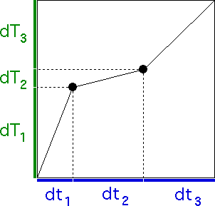

| To find the trading time generator, first we solve |
| 1 = |dY1|D + |dY2|D
+ |dY3|D = 0.7D + 0.3D + 0.6D. |
| The Mathematica command is |
| FindRoot[0.7^D + 0.3^D + 0.6^D == 1,{D,1}] |
| The approximate solution is D = 1.87638. |
| With this value of D we find the trading time generators
dT1, dT2, and dT3: |
| dT1 = |dY1|D = 0.71.87638 = 0.512090 |
| dT2 = |dY2|D = 0.31.87638 = 0.104443 |
| dT3 = |dY3|D = 0.61.87638 = 0.383467 |
|
| Here is the trading time-clock time generator. The turning points of the
generator are |
| (dt1, dT1) = (0.2, 0.512909) and |
| (dt1, dT1) + (dt2, dT2) = (0.6, 0.616533) |
|
|  |